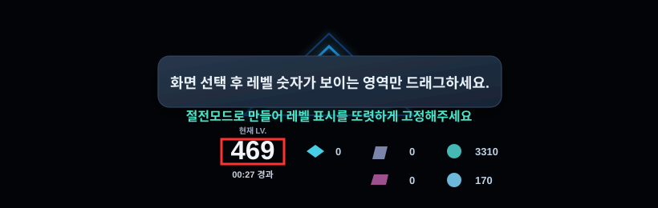

화면 캡처와 OCR은 브라우저 안에서만 처리됩니다. Discord 인증 없이도 감시할 수 있으며, 이 경우 목표 도달 시 Chrome 브라우저에서 알림음만 울립니다.
사용법
이류월드를 절전모드로 만들고 레벨 영역을 선택하세요.
절전모드 화면에서 현재 LV 숫자만 보이는 영역을 드래그하면 OCR 인식이 가장 안정적입니다. 빨간 예시처럼 숫자 주변만 타이트하게 잡아주세요.

Discord 인증
로그인 상태를 확인하는 중입니다.
알림 설정
화면 선택 후 레벨 숫자가 보이는 영역만 드래그하세요.
OCR 영역 미리보기
감시 상태
대기 중
현재 인식 결과가 여기에 표시됩니다.